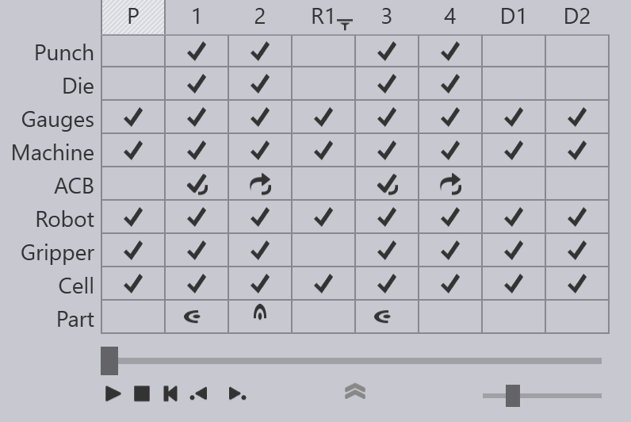

Bend Navigator

The Bend Navigator at the top of the screen provides an overview of the complete cycle. Most of the icons and terminology used in the navigator are similar to the ones used for in the navigator for manual bending. However, the additional complexities of robotic bending add some additional rows and columns that we describe here.
Pickup, Regrip and Deposit columns
The image above shows the bend navigator displayed for a BendMaster part with four bends. The bends can be seen in the columns tagged 1 to 4, and there are some additional columns displayed.
-
The column marked P represents the part pickup operation. Before bending can start, the BendMaster has to pick up a blank (flat sheet) from a pallet, or from a part dispenser. This column represents this operation. You can click on it to and use the slider to view a simulation of the pickup operation. If there are any collisions or other issues during this pickup, the corresponding rows in this column will light up yellow (for warnings) or red (for errors).
-
The columns marked with tags like R1, R2 represent regrip operations. During pickup, the gripper will pick up the part by gripping it along a particular plane, in a particular orientation. Sometimes, not all the bends in the part can be processed with this same orientation, and the gripper may need to regrip the part to continue. In this example above, the gripper had to pick up the part with a different orientation between bends 2 and 3 using a regrip operation. The R1 column can be used to simulate this regrip operation, or to monitor that operation for collisions or other errors.
-
The columns marked with tags like D1, D2 represent the part deposit operations on the final pallet, conveyor or basket. Each of the deposit columns represents a particular orientation of the part on the deposit stack and there may be several such orientations depending on the deposit pattern being used.
Robot, Gripper and Cell rows
There are new rows added for the Robot, the Gripper and the other Cell components. These rows are used to signal collisions or other errors. For example, a collision between the robot and the machine table is signalled by a red collision icon in both those rows. During the simulation, the colliding components also turn red:

The Gripper row displays collisions or other issues related to the gripper. For example, the image below shows a warning related to the suction gripper:

The Cell row represents the state of other cell components, including:
-
The Pickup and deposit pallets
-
The part dispenser
-
The regrip stations
-
Gripper stations
-
Conveyors
Here is an error icon in the Cell row indicating a collision with the regrip station:

Shortcut Keys
These shortcut keys can help speed up navigation between the different modes and panels in TecZone Bend.
Navigator shortcuts |
|
PgUp PgDn |
Switch to the previous or next stage in the simulation |
|
Switch to the previous or next phase within the same stage. For example, phases in bending are the steps like part insert, gauge-retract, bend, and beam-open. |
Spacebar |
Start/stop the simulation |
Z |
Expand/collapse the navigator panel. |
Panel shortcuts (keyboard) |
|
E E |
Open the panel for the current stage (bend / pickup / regrip / deposit) |
E B |
Open the Back-gauge panel for the current bend |
E D |
Open the Die panel |
E G |
Open the Gripper panel (to adjust the gripper position for this stage) |
E R |
Open the Robot Strategy panel for the current bend |
E W |
Open the Waypoints panel for the current stage |
Panel shortcuts (mouse) |
|
twice on navigator header |
The first click switches the simulation to that stage. The second click opens the panel for the stage |
on the back-gauge |
Open the Back-gauge panel for the current bend |
on the die |
Open the Die panel |
on the punch |
Open the Punch panel |
on the gripper (or robot C axis) |
Open the Gripper panel |
on the pallet |
Open the Pallet panel |
on the camera |
Open the Camera panel (editing pickup detection images for this part) |
on a blank on the pickup pallet |
Open the Pickup panel |
on a suction cup of a gripper |
Open the Suction panel (suction cup settings for this gripper) |
on a part on the deposit pallet |
Open the Deposit panel |
on the X,A or B axes of the robot |
Open the Robot Strategy panel for the current bend |
on the robot rail |
Open the Waypoints panel for the current stage |
on the regrip stations |
Open the Regrip Stations panel |